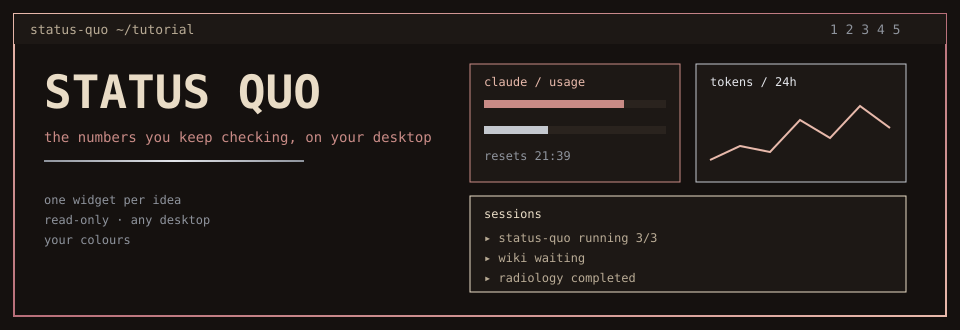
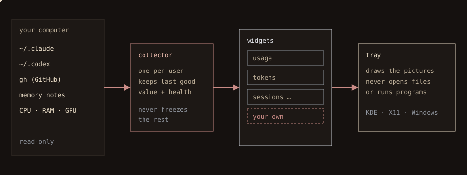
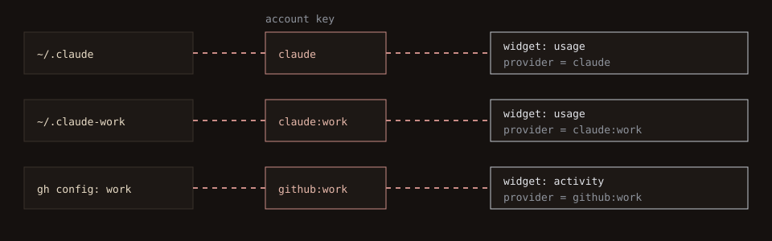
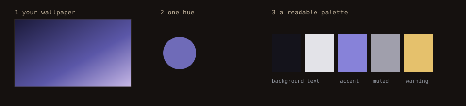

A guided tour
What if the numbers you keep checking were simply there, on your desktop, without opening anything?
This tour builds the idea one picture at a time. Scroll slowly: each scene lights up when you reach it. The plain-text version is the README.
How does it work?

Watch the dots: they travel left to right, never back.
- Your computer holds the facts: Claude and Codex folders, GitHub, notes, processor, memory, graphics.
- The collector reads them (it never writes), keeps the last good value and says if a source is fresh or broken.
- Widgets turn data into a description of a picture.
- The tray draws it. It cannot open files or run programs.
Put it on your computer
Linux · KDE, Hyprland, sway
On the desktop layer, behind your windows.
Linux · any X11 session
A frameless window kept below the others.
Linux · GNOME on Wayland
An ordinary window.
Windows 10 and 11
An ordinary window, no administrator rights.
There are no ready-made installers yet. You build it once, then it installs itself for your user only.
# Linux. Rust 1.87+ from rustup.rs, then the drawing libraries (Debian/Ubuntu):
sudo apt-get install -y pkg-config libx11-dev libxkbcommon-dev libwayland-dev libgl1-mesa-dev
git clone https://github.com/yujideluca/status-quo.git && cd status-quo
cargo build --release --locked -p status-quo
target/release/status-quo install
# Windows, PowerShell (Rust with the MSVC build tools):
git clone https://github.com/yujideluca/status-quo.git; cd status-quo
cargo build --release --locked -p status-quo
target\release\status-quo.exe install
install lists every file it owns, keeps your existing Claude and Codex hooks, and status-quo uninstall reverses it while keeping your layouts. Fedora and Arch library names, and the full details: install guide.
Your first minute
| Button | What it does |
|---|---|
+ Add widget | A menu of every widget for every account you have. |
Edit tray | Drag a widget to move it, drag an edge or corner to resize, press Remove in its centre. Borders snap to neighbours; pink and blue lines show what lines up. Done saves, Cancel discards. |
Customize | Colours, size, opacity, spacing, position, folders and each widget's settings. |
Pick the right widget
| Widget | Shows | Options |
|---|---|---|
quota | five-hour and weekly limit used, and resets | none |
tokens | token graph: input, output, cache | range 24h/7d/30d · bucket hourly/daily · cumulative |
sessions | sessions by project, subagents, done/total | history=true |
activity | GitHub commits, pull requests, issues, releases, checks | repository |
memory | recent workflow-memory entries | type |
system ram gpu | CPU and temperature, memory, every graphics card | none |
Plug in your accounts

An account key names one sign-in: claude, codex, github, or claude:work for an extra one.
- Defaults need nothing: sign in with the tool itself.
- Customize → More accounts → + Add account, choose kind and name, Browse… to its folder.
- Pick the key in + Add widget or in the widget's provider drop-down.
Make it yours

Tick Follow the wallpaper colours.
- The picture shrinks to one dominant hue.
- A palette is built from it, kept readable (text 7:1, others 4.5:1).
- A grey wallpaper stays neutral: no hue is invented.
- If the picture cannot be found, your palette stays and the reason is shown.
Also: light/dark/system, opacity, font size, per-widget looks, STATUS_QUO_HOST and STATUS_QUO_ANCHOR, a Browse… folder navigator for every source path, presets and validated import. Customization guide.
Build your own widget
A widget is a small Rust type with two methods: who am I and what do I show right now. It describes; the tray draws.
struct Note;
impl Widget for Note {
fn descriptor(&self) -> Descriptor {
Descriptor { kind: "note".into(), title: "Note".into(), providers: vec!["local".into()] }
}
fn view(&self, instance: &WidgetInstance, _snapshot: &Snapshot, _now: i64) -> View {
let text = instance.options.get("text").cloned()
.unwrap_or_else(|| "Set the text option of this widget".into());
View { title: "Note".into(), nodes: vec![Node::Text(text)] }
}
}
// once, where the tray is created:
tray.registry.register(Box::new(Note)).expect("unique widget kind");
When something looks off
| You see | Try |
|---|---|
| unavailable | The source has no value yet or cannot be read; the widget's notice names the reason. |
| Nothing after install | status-quo inspect. JSON means the collector works; an error: run status-quo collect in a terminal. |
| A normal window, not on the desktop | Your desktop offers no desktop-layer protocol (expected on GNOME/Wayland and Windows). See hosts. |
| Wallpaper colours do nothing | Customize prints the reason next to the checkbox. |
| No progress count on a session | That session keeps no task list; counts are never guessed. |
Status Quo is under active development. A passing build alone does not prove behaviour on your desktop; the guides say what was verified. Contributors: development notes, design decisions, requirements.